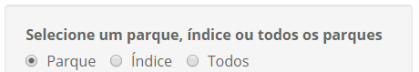
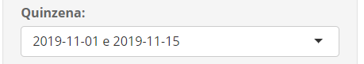
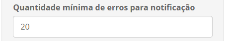
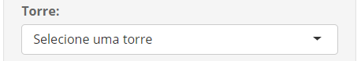
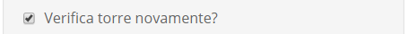
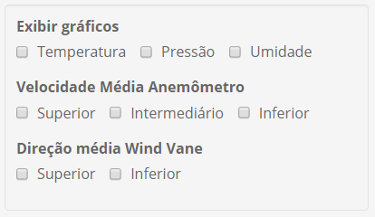
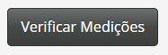

|  |
Neste botão de opção o usuário pode selecionar se deseja analisar um parque (ou estação de medição AMA), todas as estações AMA que fazem parte do índice eólico (considerando as estações de apoio ao índice), ou todas as estações cadastradas na base do AMA corporativa. Parques do índice estão definidos em X:/AMA/6 PROJETOS EM ANDAMENTO/AMA_IdentificadorErros/indiceAMA.txt e indiceAMAAux.txt. |
|  | Nesta caixa de seleção o usuário pode escolher a quinzena que deseja analisar na procura de medições suspeitas. As opções estão entre a última quizena completa até a data de execução da ferramenta e a quinzena de 1-15/01/2018. |
|  | Neste campo o usuário pode informar a quantidade mínima de medições suspeitas que devem ser encontradas para que a ferramenta indique a necessidade de verificação. Esse parâmetro foi criado para diminuir a quantidade de avisos com falso erro. O valor padrão é de 20 medições suspeitas por instrumento. |
|  |
Nesta caixa de seleção o usuário pode escolher qual a torre (ou estação) AMA será analisada dentre todas a cadastradas na base corporativa do AMA. Essa caixa de seleção somente aparece quando o opção Parque do botão de opção está selecionada. |
|  |
Nesta caixa de seleção o usuário pode escolher se vai analisar novamente uma torre (ou estação) AMA na procura de medições suspeitas. Caso a opção não esteja selecionada, a ferramenta só irá executar a análise de medições suspeitas caso a análise para a quinzena escolhida nunca tenha sido efetuada. Essa caixa de seleção somente aparece quando o opção Parque do botão de opção está selecionada. |
|  |
Nesta caixa de seleção o usuário pode escolher se os gráficos de análise de medições suspeitas irão aparecer. A opção é feita por tipo de medição e instrumento. Os gráficos que irão aparecer, caso alguma opção seja selecionada, são de identificação das medições suspeitas pela ferramente, intervalo de confiança da regressão quantílica e comparação de medição entre instrumentos equivalentes e estações. Essa caixa de seleção somente aparece quando o opção Parque do botão de opção está selecionada. |
|  |
Este botão executa a ferramenta de verificação de medições suspeitas. Após a execução, será exibido um relatório com as medições suspeitas encontradas (caso haja e seja superior ao mínimo definido para aviso) e a tabela fat_comparacao_torre_ama será atualizada com a data da quinzena analisada com referência nas opções selecionadas. Caso a ferramenta seja executa para o índice ou para todas as estações, o relatório também será gravado em: X:/AMA/6 PROJETOS EM ANDAMENTO/AMA_IdentificadorErros/logErros/ |